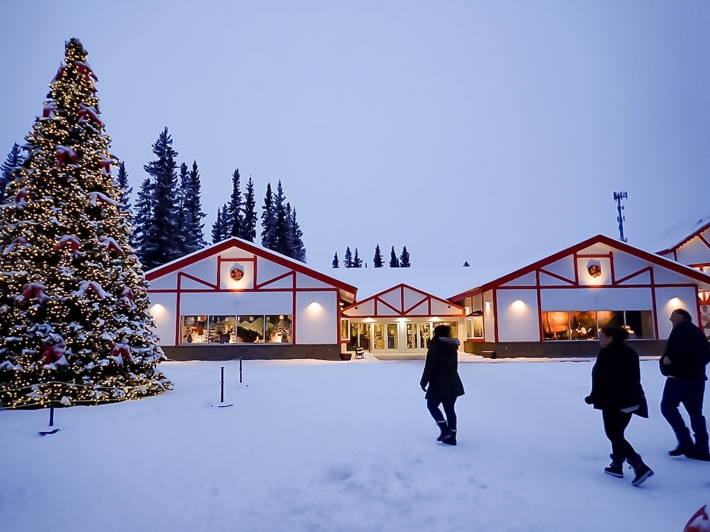

Hello, my name is Dylan Johnson, and I'm currently embracing the exciting world of gaming and interactive media in my second year at Boise State's GIMM program. With a burning passion for game design, I am enthusiastically diving into the intricacies of creating engaging and immersive gaming experiences. Outside the digital realm, I also take a lot of care in my job at a local pet store, where I dedicate my time to caring for animals.My technological curiosties and a love for animals defines who I am and continuously shapes my journey in life.
I am originally from the small city of North Pole Alaska! My family moved there in 2003, and I grew up there until I graduated high school. It is located in the very interior of Alaska. There is definitely not much to do up there if you don't enjoy hunting and fishing! It is extremely dry and cold with winters reaching almost -50 degrees below zero! Below, I attached a picture of one of North Pole's attractions, the Santa Claus House.In 2020 Me and my whole family moved to Boise, Idaho in the search for someplace warmer. We quickly fell in love with the area, and I chose to go to Boise State University in the fall of that year. I greatly enjoy Idaho because of the much more pleasant weather, and the fact that it has many of the outdoor activities that Alaska does, while offering much more to do outside of that.
In my free time, I love to play video games, watch movies, along with various outdoor activites such as fishing and hiking. Growing up in Alaska taught me how important and fun it can be to spend time outdoors. My family and I are very much into fishing as Alaska has some of the best fishing in the world. We still very much enjoy fishing in Idaho as well. As well as playing video games and being outdoors, one of my hobbies is keeping aquariums. I am a huge animal lover and have always been obsessed with underwater life. My current job at petco is what convinced me to start the aquarium hobby. I began keeping aquariums a couple years ago, and now currently have 3 tanks set up. One of them is a saltwater tank with clownfish!
I chose to pursue a degree in GIMM because I love video games and wanted to learn about the process that goes into making them. I've always found it a fascinating field and I am hoping to land a career in it. I primarily am focused on learning how to operate Unity, and how to creat/animate 3D envrionments and creatures. I am working on building up my skills in these specific areas as Boise State teaches me how to use software such as Blender and Maya. I have some experience creating low-poly envrionments and am currently learning how to create more complex environments and creatures using 3D tools. The world of video game creation and animation is amazing and I am excited to explore it further!
Email: dpjalaska@gmail.com>
Phone: 907-978-0653
LinkedIN: https://www.linkedin.com/in/dylan-johnson-54b8212b4/

This very first project was my first ever project in the GIMM program at Boise State. This is a very basic Sci-Fi themed game where the player is an astronaut trying to escape from a giant ship. This is a basic 2D platformer with lots of obstacles such as large gaps, spikes, and falling platforms. There are also many coins to collect throught the levels as well! This project was many using Unity, Visual Studio, and I also used Photoshop to create sprites and animations. This project was fun to create as it was really exciting to see the process of building a game in Unity.

GIMM has also a heavy focus on web development skills as well. For this project, I created a website that is supposed to show data collected. I made the site about the different categories of animals that I sell at my job at Petco. The site contains tables and graphs that can be filtered and altered. This project taught me much about how to code websites with HTML, CSS, Javascript, and Node.js. HTML and CSS was used to create the structure and appearance of the site, while Javascript and Node was used to create the functionality of the D3 graphs. This project was definitely stressful as it was a lot of new things to learn all at once, but it was very satisfying when it all came together and functioned properly.

This project was my first time ever working with Unity 3D. This project is a 3D art gallery that lets the player walk around and look at different photos on the walls and see information about each photo. For this, I used picutres of my pets. When the player walks up to a photo, they wll see text explaining the photo appear on their screen. This project taught me about setting up lighting, textures, and first person controls in Unity. I am hoping to build on these skills to learn more about wokring in 3D.

This project was a group assignment where we were given an abstract topic, and told to make an interactive comic about it. The topic we were given was "The Emptiness of an Atom". We decided to make our story about a lone atom who gets told that by himself, he has no value and is worthless by a chemistry teacher. The atom then goes on a journey of self discovery and learns that while he may not be much on his own, he is capable of great things when working together with other atoms. The comic involves the reader having to collect hidden atoms around each panel in order to unlock the ending. This project was made mostly in Unity while the animations were done using Photoshop and Adobe Animate. This project was my first ever dive into animation and taught me a lot about 2D animating practices.

Here we have a project that I made using Unity 3D. This is a 3D leap frog game that can be played with 2 people on one device. The goal for the players is to jump over each other to score points. There are many obstacles and things to climb on around the arena that players can use to get above their opponent. There are towers of movable cubes as well that let the players climb or topple over. If you cause the tower to fall on your opponent then thats a point! This game allows 2 players because player 1 uses the WASD keys to move and the left Shift to jump, while player 2 uses the IJKL keys to move and right Shift to jump. This project was made entirely in Unity. 3D games and environments are what I want to keep wokring on the most as I go into the future.